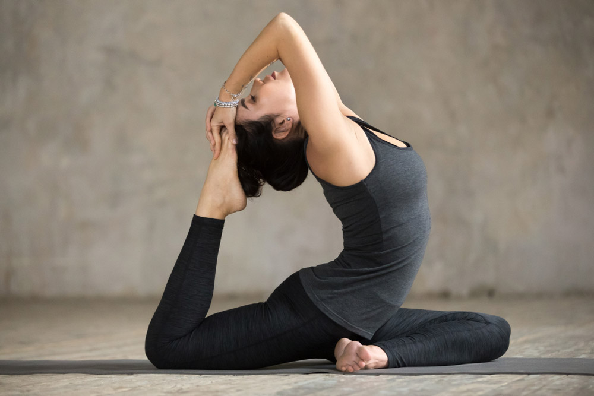
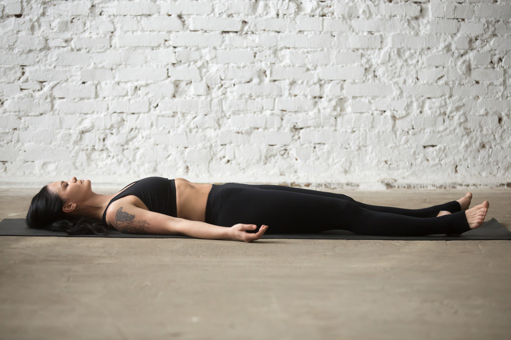

Sadhguru: Essentially in the tradition, once we attach the word “Yoga”
to anything, it indicates that it is a complete path by itself. The word
“Yoga” essentially means, “that which brings you to reality”. Literally,
it means “union.” Union means it brings you to the ultimate reality,
where individual manifestations of life are surface bubbles in the
process of creation.Yoga means to move towards an experiential
reality where one knows the ultimate nature of the existence,
the way it is made.
More than a physical workout, yoga is a full mind and body exercise. A set of specific exercises, called poses, combined with specific breathing techniques and meditation principles are the building blocks of a yoga class. The benefits of a regular yoga practice are wide-ranging. In general, a complete yoga workout can help keep your back and joints healthy, improve your overall posture, stretch and strengthen muscles and improve your balance. In addition, yoga’s focus on the breath can calm you and help you learn to be more mindful of your body.
The building blocks of yoga are poses. These are good ones to learn as you build a regular yoga practice.
These 10 poses are a complete yoga workout. Move slowly through each pose, remembering to breathe as you move. Pause after any pose you find challenging, especially if you are short of breath, and start again when your breathing returns to normal. The idea is to hold each pose for a few, slow breaths before moving on to the next one.
Child's Pose (Balasana)
This calming pose is a good default pause position. You can use child’s pose to rest and refocus before continuing to your next pose. It gently stretches your lower back, hips, thighs, knees and ankles and relaxes your spine, shoulders and neck.Helps alleviate stress and anxiety. Flexes the body's internal organs and keeps them supple. Relieves neck and lower back pain when performed with the head and torso supported.
Downward-Facing Dog Pose (Adho Mukha Shvanasana)
Downward-facing dog strengthens the arms, shoulders and back while stretching the hamstrings, calves and arches of your feet. It can also help relieve back pain. It Calms the brain and helps relieve stress and mild depression. Also helps prevent osteoporosis.
Cobra Pose (Bhujangasana)
Cobra Pose is best known for its ability to increase the flexibility of the spine. It stretches the chest while strengthening the spine and shoulders. It also helps to open the lungs, which is therapeutic for asthma. This pose also stimulates the abdominal organs, improving digestion. An energizing backbend, Cobra reduces stress and fatigue. It also firms and tones the shoulders, abdomen,and buttocks, and helps to ease the pain of sciatica. Traditional yoga texts claim the pose heals the body of disease and awakens Kundalini — the divine cosmic energy that brings forth self-realization.
Wheel Pose (Chakrasana)
Wheel Pose is a backbend that is characterized as a beginner's backbend, but it still requires building up strength and flexibility to achieve it. It opens the chest, shoulders, and hips in a way that counteracts the typical modern-day sitting posture.This pose improves spinal mobility and opens the chest. It strengthens the arms, shoulders, and legs. Wheel Pose is traditionally said to be energizing and can lift your mood.
Triangle Pose (Trikonasana)
Triangle Pose is a foundation yoga pose across almost every different style of yoga. Establishing the foundation of the pose with grounded feet and strong legs allows the chest to twist deeply and blossom open. It also challenges and improves balance and stability.
Half Lord of the Fishes Pose (Ardha Matsyendrasana)
Half Lord of the Fishes Pose is a deep twist that is one of the 12 basic poses of Hatha yoga. One of the greatest things about yoga is that it puts you in positions you generally don't do in the normal course of your day. This Pose stretches the side body, upper back, and neck, and improves spinal mobility. It's important to keep these areas loose and mobile to prevent pain from repetitive stress injuries. Twists such as this can also help constipation.
Bridge Pose (Setu Bandha Sarvangasana)
A supportive block under your sacrum in Bridge Pose turns this yoga backbend into a restorative pose. It allows the spine to experience extension while being gently supported. This pose may help relieve back pain and might be used as part of the cool down in a yoga sequence.This suppresses the sympathetic "fight-or-flight" nervous system and promotes the parasympathetic nervous system.Back extensions also help relieve the hunch from poor posture and sitting, giving you more flexibility and mobility for daily activities.

One-Legged King Pigeon Pose (Eka Pada Rajakapotasana)
This pose stretches the hips, quads, groin, and shoulders. It is also a backbend that opens the heart. In preparing for this pose, you will develop great flexibility in your hips, shoulders, and back. You will also challenge your balance. Practicing this pose will help you build even greater flexibility, which will halp you throughout your daily life.
Plow Pose (Halasana)
Plow Pose stretches the shoulders, back, neck, hamstrings, and calves. It is a pose that will stretch the paraspinal muscles of the lower back, which are often not targeted in other poses, and may help relieve a backache. Plow is considered to be a relaxing and calming pose.

Corpse Pose (Shavasana)
No yoga session is complete without a final relaxation posture.Even though Corpse Pose is a resting pose, it’s not the same a sleeping. You should try to stay present and aware during the five to 10 minutes you spend in final relaxation. Savasana allows your body and mind time to process what has happened during a yoga class.